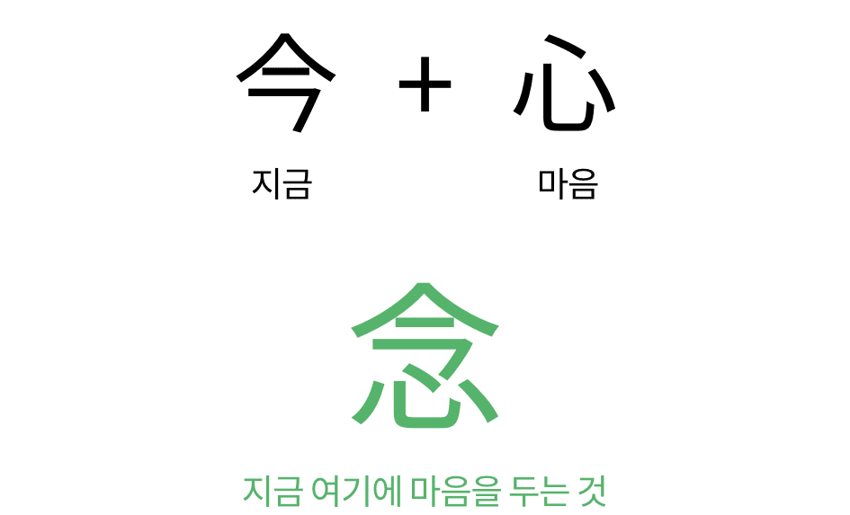

마음챙김(Mindfulness)
명상이란?
첫 마음챙김 명상 하시느라 수고하셨습니다.
시작 명상을 통해서 마음챙김 명상을 살짝 맛 보셨는데 어떠셨나요?
잠시 모든 행동을 의도적으로 멈추고, 지금 이 순간 마음을 열어 자신의 몸과 마음에서 일어나는 경험에 온전히 주의를 기울이는 경험, 많은 분들에게 어쩌면 매우 낯선 경험일 수 있습니다만, 동시에 어떤 분들은 새로운 느낌으로 경험하셨을 수도 있습니다.
조금 전 직접 경험한 마음챙김 명상에서 ‘마음챙김’ 이란 단어는 영어의 ‘Mindfulness’ 라는 단어의 한국어 번역이고, 이 말은 한국어로는 ‘정념(正念)’ 명상 용어로 잘 알려져 있지요. 정념이란 단어 중에서 우리에게 친숙한 ‘념’이란 단어를 자세히 살펴 보면, 현재를 의미하는 ‘今’자와 ‘心＇자가 결합된 형태군요. 따라서, 마음챙김의 주요한 내용이 지금 이 순간과 마음이 중요한 내용이라고 쉽게 유추할 수 있겠습니다.

마음챙김 (Mindfulness)라는 말은 최근 다양한 개념으로 설명되고 있는데, 그 중에서 가장 대중적으로 알려진 정의가 있다면 마음챙김 명상 프로그램으로 세계적으로 가장 널리 알려진 MBSR 프로그램의 창시자이자 Mr. Mindfulness라고 불리는 존 카밧진 박사의 정의라고 할 수 있습니다. 카밧진 박사는 마음챙김을 다음과 같이 정의합니다.
위의 내용 중에 핵심만 추려서 간단히 정의하면,
“지금 이 순간, 의도를 가지고, 판단하지 않고 주의를 기울이는 것”
정의만 보면, 무슨 소리지?하고 고개를 갸우뚱할 수 있지만, 직접 체험해 보면 ‘아하~ 이런거였구나. 이렇게 단순한 거였어?’ 라고 생각하시는 분들이 많을 것입니다.
하지만, 카밧진 박사도 언급했듯이, “Mindfulness is simple, but not easy” 라고 말하면서, 어쩌면 세상에서 가장 어려운 일일(Maybe a hardest thing in the world)수도 있다고 말할 정도이니까요.
경험해서 아시겠지만, 음성 안내를 통해 주의를 특정한 대상에 기울이라고 했을 때 잘 되던가요?
아마도 대부분은 그렇지 않으셨을겁니다. 우리 마음은 끊임없이 과거 또는 미래, 아니면 이곳 저곳을 뛰어다니고, 잠시도 멈추지 않고 정신없이 날뛰는 원숭이 (Monkey mind)처럼 계속 주의가 흩어지거나 방황하는 경험을 하셨을 것입니다. 이렇게 늘 분주하고 방황하는 우리의 마음을, 우리의 주의를 지금 이순간으로 되돌려 오도록 돕는 것이 마음챙김 명상입니다.
“Mindfulness is simple, but not easy”
- 존 카밧진 -
앞으로 매순간 자신의 몸과 마음에서 일어나는 경험을 의도적으로 판단없이 주의를 기울여 알아차리는 것! 어렵지 않지요? 처음부터 어렵다고 말씀 드리니, 걱정이 많으시죠?
굿뉴스는 마음챙김은 누구나 언제든지 할 수 있다는 점입니다. 지금 당장 바로 도전할 수도 있지요. 그럼 마음챙김을 잠깐이지만, 맛보기를 했으니, 마음챙김에 대해서는 차차 더 깊이 이해해 보기로 하고, 그럼 이 오래된 동양 전통의 명상이 최근 서구 사람들에게 가장 핫한 키워드 중 하나가 되었는지 한번 알아볼까요?
이것만은 꼭 기억해요!
1
마음챙김이란 “의도를 가지고, 판단하지 않고지금 이 순간 주의를 기울이는 것 ”
- 존 카밧진 -
2
마음챙김은 단순하지만, 쉽지 않게 느낄 수 있습니다. (Mindfulness is simple but not easy)
왜냐하면, 자동적으로, 습관적으로 일어나는 무수한 생각과 감정에 빠져 우리의 주의는
과거나 미래로 끊임없이 내달리게 때문입니다.